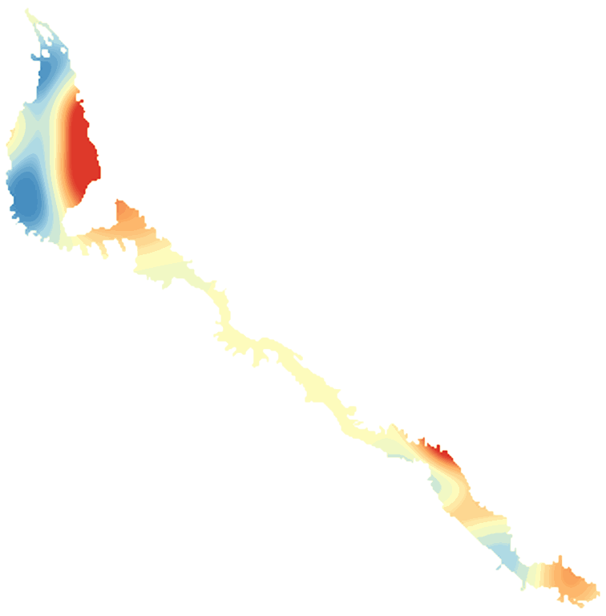

LakeScope › AZ
Lake Havasu today
Updated 2026-11-14 - Atlas Labs
Clear water, 71°F water, level falling, near normal, calm this morning.
Water level
447.65 ft
Bureau of Reclamation - 2026-11-12
7-day trend: falling (-1.13 ft). Compared with normal for this date: +0.1 ft (same weeks, 2016-2025).
Water clarity and algae
Clear water Last clear view: a few days ago.
Surface temperature
71°F
seen from space on 2026-11-12

Weather, next 3 days
| Day | Sky | High / low | Wind | Rain |
|---|---|---|---|---|
| Saturday | Sunny | 73 / 57°F | 6 mph SE | 1% |
| Sunday | Sunny | 76 / 58°F | 5 mph ESE | 0% |
| Monday | Mostly Sunny | 78 / 59°F | 7 mph SE | 8% |
Sunrise 06:09 - sunset 16:33 - Waxing crescent. National Weather Service.
Get the LakeScope app: alerts and the 3-D view of Lake Havasu